Thu, 01 Mar 2012 10:49:48 GMT
La ley Sinde-Wert entra en funcionamiento y se producen las primeras denuncias
La ley Sinde-Wert entra en funcionamiento y se producen las primeras denuncias
La infame ley Sinde-Wert ha dejado de ser una polémica que pesaba de forma incierta en nuestro futuro, para convertirse en una realidad que ya tiene aplicación práctica en los juzgados. El encargado de su estreno ha sido el músico Eme Navarro, que esta mañana ha presentado ya la primera denuncia. Este miembro de la SGAE ha denunciado a las 250 páginas que se agruparon bajo el nombre Wert de enlaces, como medida de protesta y desobediencia ante esta medida legislativa impulsada por los dos últimos gobiernos españoles bajo presiones venidas del otro lado del Atlántico. De su tramitación y ejecución, así como del resto de denuncias que vayan llegando en los próximos días, se encargará la Sección Segunda de la Comisión de la Propiedad Intelectual, presidida por María Teresa Lizaranzu, la nueva directora general de Política e Industrias Culturales y del Libro. A pesar de que el Tribunal Supremo ha admitido a trámite la impugnación de esta ley, así como el posterior recurso contencioso-administrativo también aceptado, vemos que el plan sigue adelante. Según las estimaciones, se estima que durante los próximos días se presenten unas cuarenta denuncias desde distintos frentes. La cosa irá rápida, pues se espera que los primeros cierres comiencen a producirse a finales de marzo. La maquinaria está lista para poder llevar a cabo el proceso completo en plazos de entre 20 días y tres meses; las garantías judiciales que puedan quedar en entredicho durante el mismo no parecen ser muy relevantes para sus promotores. Como medida para satisfacer a ciertos lobbys, es obvio que la ley Sinde-Wert va a cumplir su papel y seguro que en las próximas semanas nos veremos obligados a comentar el cierre de algunas páginas. No obstante, pensar que esto va a suponer un freno para la distribución de contenidos protegidos o intentar compararlo con el proceso contra Megaupload es sencillamente ridículo. Vía | Nación Red, Hacktivistas, El País Imagen | @isaachacksimov En Genbete | La Ley Sinde será efectiva a partir del 1 de marzo, El gobierno español aprueba la ley Sinde sin avisos ni explicaciones
La infame ley Sinde-Wert ha dejado de ser una polémica que pesaba de forma incierta en nuestro futuro, para convertirse en una realidad que ya tiene aplicación práctica en los juzgados. El encargado de su estreno ha sido el músico Eme Navarro, que esta mañana ha presentado ya la primera denuncia.
Este miembro de la SGAE ha denunciado a las 250 páginas que se agruparon bajo el nombre Wert de enlaces, como medida de protesta y desobediencia ante esta medida legislativa impulsada por los dos últimos gobiernos españoles bajo presiones venidas del otro lado del Atlántico. De su tramitación y ejecución, así como del resto de denuncias que vayan llegando en los próximos días, se encargará la Sección Segunda de la Comisión de la Propiedad Intelectual, presidida por María Teresa Lizaranzu, la nueva directora general de Política e Industrias Culturales y del Libro.
A pesar de que el Tribunal Supremo ha admitido a trámite la impugnación de esta ley, así como el posterior recurso contencioso-administrativo también aceptado, vemos que el plan sigue adelante. Según las estimaciones, se estima que durante los próximos días se presenten unas cuarenta denuncias desde distintos frentes.
La cosa irá rápida, pues se espera que los primeros cierres comiencen a producirse a finales de marzo. La maquinaria está lista para poder llevar a cabo el proceso completo en plazos de entre 20 días y tres meses; las garantías judiciales que puedan quedar en entredicho durante el mismo no parecen ser muy relevantes para sus promotores.
Como medida para satisfacer a ciertos lobbys, es obvio que la ley Sinde-Wert va a cumplir su papel y seguro que en las próximas semanas nos veremos obligados a comentar el cierre de algunas páginas. No obstante, pensar que esto va a suponer un freno para la distribución de contenidos protegidos o intentar compararlo con el proceso contra Megaupload es sencillamente ridículo.
Vía | Nación Red, Hacktivistas, El País
Imagen | @isaachacksimov
En Genbete | La Ley Sinde será efectiva a partir del 1 de marzo, El gobierno español aprueba la ley Sinde sin avisos ni explicaciones

Thu, 01 Mar 2012 07:00:00 GMT
Edit App, otra vuelta de tuerca a los lectores de feeds en el móvil
Edit App, otra vuelta de tuerca a los lectores de feeds en el móvil
El feed no es un soporte muerto, y aunque algunos parezcan estar olvidándose de él, una interesante hornada de aplicaciones móviles están demostrando que la lectura de noticias en este formato puede seguir siendo atractiva y novedosa para el usuario. Flipboard, Pulse News o Persona/ son buenos ejemplos de ello. Otra muestra de que el feed todavía puede dar mucho que hablar la tenemos en Edit App, un lector para dispositivos móviles bastante atrevido. Lo primero que llama la atención es su descarada vocación visual, más aún que la de Flipboard, lo cual no lleva a una herramienta tremendamente atractiva aunque algo limitada en el sentido más práctico. Pero lo más interesante de esta aplicación es que está pensada para que podamos enviar al instante cualquier elemento a nuestro blog personal o perfil en Tumblr, de forma que podamos pasar de la lectura a la publicación en unos pocos gestos. Esta posibilidad adicional de edición es la que le da nombre, y podéis ver una demostración de la misma en el vídeo siguiente. Edit App está disponible de forma gratuita por tiempo limitado en la App Store, siendo compatible con iPhone, con iPod Touch y con iPad. Por supuesto, se integra a la perfección con Google Reader, permitiendo marcar artículos como leídos mediante el desplazamiento o dejarlos para después, algo para lo que también es compatible con Instapaper. Vídeo | Vimeo
El feed no es un soporte muerto, y aunque algunos parezcan estar olvidándose de él, una interesante hornada de aplicaciones móviles están demostrando que la lectura de noticias en este formato puede seguir siendo atractiva y novedosa para el usuario. Flipboard, Pulse News o Persona/ son buenos ejemplos de ello.
Otra muestra de que el feed todavía puede dar mucho que hablar la tenemos en Edit App, un lector para dispositivos móviles bastante atrevido. Lo primero que llama la atención es su descarada vocación visual, más aún que la de Flipboard, lo cual no lleva a una herramienta tremendamente atractiva aunque algo limitada en el sentido más práctico.
Pero lo más interesante de esta aplicación es que está pensada para que podamos enviar al instante cualquier elemento a nuestro blog personal o perfil en Tumblr, de forma que podamos pasar de la lectura a la publicación en unos pocos gestos. Esta posibilidad adicional de edición es la que le da nombre, y podéis ver una demostración de la misma en el vídeo siguiente.
Edit App está disponible de forma gratuita por tiempo limitado en la App Store, siendo compatible con iPhone, con iPod Touch y con iPad. Por supuesto, se integra a la perfección con Google Reader, permitiendo marcar artículos como leídos mediante el desplazamiento o dejarlos para después, algo para lo que también es compatible con Instapaper.
Vídeo | Vimeo
Thu, 01 Mar 2012 00:30:00 GMT
La nueva radio social Senzari llega a España
La nueva radio social Senzari llega a España
Tras su reciente estreno en Estados Unidos y Brasil, el siguiente mercado elegido por Senzari para abordar el cada vez más competido terreno de la música en streaming ha sido España. Este servicio llegará hoy a nuestro país poco después de que Rdio decidiera estrenarse también aquí. Para un desembarco por todo lo alto, sus responsables se han aliado con la MTV, que se encargará de promocionar el producto desde su extensa red mediática. Lo hace además estrenando un nuevo diseño orientado a su uso en tablets, levantando la restricción de las invitaciones para acceder y aumentando aún más sus posibilidades sociales; no en vano requiere cuenta de Facebook para su uso, algo que luego emplea para conectar con nuestros amigos. Senzari llega fuerte con un catálogo de once millones de canciones, uso completamente gratuito y un algoritmo al estilo Pandora para recomendar música que saca buen provecho de la información que obtenga de nosotros y nuestros contactos en Facebook. Desde luego, por falta de opciones para escuchar música online no va a ser. Vía | TechCrunch

Tras su reciente estreno en Estados Unidos y Brasil, el siguiente mercado elegido por Senzari para abordar el cada vez más competido terreno de la música en streaming ha sido España. Este servicio llegará hoy a nuestro país poco después de que Rdio decidiera estrenarse también aquí.
Para un desembarco por todo lo alto, sus responsables se han aliado con la MTV, que se encargará de promocionar el producto desde su extensa red mediática. Lo hace además estrenando un nuevo diseño orientado a su uso en tablets, levantando la restricción de las invitaciones para acceder y aumentando aún más sus posibilidades sociales; no en vano requiere cuenta de Facebook para su uso, algo que luego emplea para conectar con nuestros amigos.
Senzari llega fuerte con un catálogo de once millones de canciones, uso completamente gratuito y un algoritmo al estilo Pandora para recomendar música que saca buen provecho de la información que obtenga de nosotros y nuestros contactos en Facebook. Desde luego, por falta de opciones para escuchar música online no va a ser.
Vía | TechCrunch
Wed, 29 Feb 2012 22:30:00 GMT
Foursquare se pasa a los mapas de OpenStreetMap
Foursquare se pasa a los mapas de OpenStreetMap
Los mapas son la principal razón de ser de Foursquare, como en toda red basada en la gelocalización, así que el cambio que acaban de anunciar sus responsables no es un asunto menor. Después de años empleando Google Maps, este servicio ha decidido dar el salto a la tecnología abierta de mapeado OpenStreetMap. Esta alternativa se basa en la edición libre de mapas por usuarios de todo el mundo de manera colaborativa, permitiendo una flexibilidad que convenció a los responsables de Foursquare cuando decidieron iniciar la búsqueda de una herramienta más económica que la ofrecida por Google. Para integrar OpenStreetMap en su web, han decidido emplear los servicios de la compañía Mapbox. Por el momento, el cambio solo afectará a los mapas de la versión web, mientras que las aplicaciones móviles mantendrán Google Maps como hasta ahora. Así pues, un atrevido movimiento para abrazar una alternativa abierta que puede marcar un notable precedente en el uso de este tipo de tecnologías. Vía | Genbeta Social Media > Foursquare En Genbeta | Foursquare empieza a agregar menús en los detalles de algunos restaurantes, De competidores a algo diferente: la caída de Gowalla frente a Foursquare
Los mapas son la principal razón de ser de Foursquare, como en toda red basada en la gelocalización, así que el cambio que acaban de anunciar sus responsables no es un asunto menor. Después de años empleando Google Maps, este servicio ha decidido dar el salto a la tecnología abierta de mapeado OpenStreetMap.
Esta alternativa se basa en la edición libre de mapas por usuarios de todo el mundo de manera colaborativa, permitiendo una flexibilidad que convenció a los responsables de Foursquare cuando decidieron iniciar la búsqueda de una herramienta más económica que la ofrecida por Google. Para integrar OpenStreetMap en su web, han decidido emplear los servicios de la compañía Mapbox.
Por el momento, el cambio solo afectará a los mapas de la versión web, mientras que las aplicaciones móviles mantendrán Google Maps como hasta ahora. Así pues, un atrevido movimiento para abrazar una alternativa abierta que puede marcar un notable precedente en el uso de este tipo de tecnologías.
Vía | Genbeta Social Media > Foursquare
En Genbeta | Foursquare empieza a agregar menús en los detalles de algunos restaurantes, De competidores a algo diferente: la caída de Gowalla frente a Foursquare
Wed, 29 Feb 2012 19:15:34 GMT
Cómo instalar Windows 8 en una máquina virtual, paso a paso
Cómo instalar Windows 8 en una máquina virtual, paso a paso
En este artículo vamos a ver cómo se instala Windows 8 Consumer Preview en una máquina VirtualBox, paso a paso. Aunque la cantidad de imágenes del artículo es copiosa, Windows 8 Consumer Preview es uno de los sistemas operativos más sencillos de instalar que he tenido ocasión de probar. La versión elegida para la prueba es la que trae la imagen ISO 32-bit (x86) en inglés. Respecto de la versión de VirtualBox es la última disponible al día de hoy (4.1.8), que ya trae una configuración por defecto para Windows 8. El proceso de instalación es muy parecido al necesario para una instalación fija. He asumido los parámetro por defecto y únicamente he asignado un tamaño de RAM de 3GB (sobre un total de 12 en el equipo) y la memoria para la tarjeta gráfica virtual la he situado en el máximo (128 MB). Esto no quiere decir que sea la mejor opción, que en parte depende de cada máquina, pero es así cómo se ha hecho la instalación para ofrecer las capturas de pantalla con fines ilustrativos. Instalando Windows 8 Consumer Preview Para que no haya problemas a la hora de reiniciar el sistema, el disco duro virtual es el primero en el orden de arranque y la imagen ISO la segunda. Como en este punto no tenemos nada, arrancará desde la imagen ISO. Lo primero que aparece es una pantalla que difiere de los visto hasta ahora en otras versiones de Windows, no se ve el logotipo asociado a Windows 8, sino un pez de colores. Tras unos instantes, aparece la pantalla para seleccionar el idioma (que no podemos elegir en este caso) aunque sí cambiar a español los ajustes locales (formato de hora y moneda) y la disposición del teclado. Una vez realizada la selección, pulsamos “Next” y llegamos al punto donde se inicia la instalación en sí. En el siguiente paso hemos de introducir la clave de producto que el fabricante ha puesto a disposición de los usuarios en la página de descarga: DNJXJ-7XBW8-2378T-X22TX-BKG7J Aceptamos el acuerdo de licencia y pasamos al punto en que hemos de tomar la primera decisión: actualización o instalación personalizada. Esto es muy importante en el caso de realizar la instalación en un equipo que ya disponga de un sistema operativo instalado, porque habremos de designar particiones. En nuestra instalación no tenemos nada que decidir y asignamos el disco virtual completo (20 GB en la instalación por defecto). Ahora nos enfrentamos a la parte más lenta de la instalación, la copia de archivos desde la imagen ISO, la descompresión de archivos, instalación de funciones del sistema operativo, y actualizaciones si las hubiere. Cuando finaliza el proceso, el sistema se reinicia de forma automática tras unos segundos, que podemos abreviar pulsando el control “Restart now”. El sistema ya está instalado, y tras el reinicio y una sucesión de pantallas negras con varios avisos (Preparing, Getting devices ready, Getting system ready) y el pez de colores, la máquina se reinicia otra vez. Aparece durante unos segundos de nuevo el pez, con repetición del aviso Preparing, y por fin llegamos a la pantalla de personalización. Aquí asignaremos un nombre a la máquina y elegiremos un color de fondo entre los nueve posibles. Una vez completado el proceso anterior, aparece la pantalla de ajustes. Disponemos de dos opciones: configuración exprés y a medida. He seleccionado la primera por las características de esta prueba. En el siguiente paso hemos de decidir si deseamos asociar nuestra instalación a un Windows ID o no. En el primer caso, la asociación nos permitirá descargar de forma cómoda aplicaciones desde Windows Store, acceder a archivos y fotos desde cualquier parte y sincronizar las preferencias desde cualquier equipo. La opción elegida ha sido asociar la instalación con mi Windows ID. Tras unos instantes, podemos ingresar la clave para que posteriormente podamos conectar con otros servicios Microsoft de forma automática (Messenger, Hotmail, Xbox Live y Windows Live Services). Ahora pasaremos por tres pantallas negras más —sin pececito— mientras sincroniza con nuestra cuenta, y una vez finalizado el proceso de ajustes, estaremos en la pantalla de bienvenida. Por fin hemos terminado, Windows 8 Consumer Preview está listo para usar y disfrutar de la nueva joya de la corona de Microsoft. Tendremos a la vista la primera imagen que ilustra el artículo. En la próxima ocasión que arranquemos el sistema, si tenemos asociada una imagen a nuestra cuenta, aparecerá en la pantalla de bienvenida. Windows 8 Consumer Preview, primera impresión Si habéis tenido la paciencia de llegar hasta aquí, cosa que agradezco, os puede haber parecido que la instalación es larga y engorrosa. Nada más lejos de la realidad. Quitando la parte de copia y descompresión de archivos, el proceso es muy rápido. Otra cuestión distinta será realizar una instalación conviviendo con un sistema previo instalado. Esto no es aconsejable porque estamos ante una beta, cuya estabilidad y fiabilidad no conocemos a priori, que pudiera dañar el sistema. Lo recomendable es instalar en una partición aislada, y si es en otro disco duro mejor, para no tocar el MBR del disco principal y poder seleccionar el arranque a través de la BIOS. Si sólo os mueve la curiosidad, lo mejor es crear una máquina virtual sin más complicaciones, siguiendo los pasos descritos aquí. En breve, vamos a realizar una instalación completa independiente sobre una máquina de 64 bits, para analizar a fondo todo lo que nos brinda esta Windows 8 Consumer Preview que, os anticipo, es sencillamente espectacular. Después de haber tenido la experiencia con la prueba de su versión antecesora, Windows 8 Developer Preview, la beta que os traemos hoy entra en otra dimensión, fruto de un gran trabajo por parte de Microsoft. Web | Descarga En Genbeta | Windows 8: todo lo que necesitas saber | Windows 8 Consumer Preview ya se puede descargar
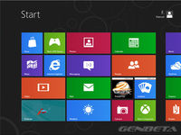
En este artículo vamos a ver cómo se instala Windows 8 Consumer Preview en una máquina VirtualBox, paso a paso. Aunque la cantidad de imágenes del artículo es copiosa, Windows 8 Consumer Preview es uno de los sistemas operativos más sencillos de instalar que he tenido ocasión de probar.
La versión elegida para la prueba es la que trae la imagen ISO 32-bit (x86) en inglés. Respecto de la versión de VirtualBox es la última disponible al día de hoy (4.1.8), que ya trae una configuración por defecto para Windows 8. El proceso de instalación es muy parecido al necesario para una instalación fija.
He asumido los parámetro por defecto y únicamente he asignado un tamaño de RAM de 3GB (sobre un total de 12 en el equipo) y la memoria para la tarjeta gráfica virtual la he situado en el máximo (128 MB). Esto no quiere decir que sea la mejor opción, que en parte depende de cada máquina, pero es así cómo se ha hecho la instalación para ofrecer las capturas de pantalla con fines ilustrativos.
Instalando Windows 8 Consumer Preview
Para que no haya problemas a la hora de reiniciar el sistema, el disco duro virtual es el primero en el orden de arranque y la imagen ISO la segunda. Como en este punto no tenemos nada, arrancará desde la imagen ISO.
Lo primero que aparece es una pantalla que difiere de los visto hasta ahora en otras versiones de Windows, no se ve el logotipo asociado a Windows 8, sino un pez de colores.
Tras unos instantes, aparece la pantalla para seleccionar el idioma (que no podemos elegir en este caso) aunque sí cambiar a español los ajustes locales (formato de hora y moneda) y la disposición del teclado.
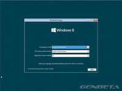
Una vez realizada la selección, pulsamos “Next” y llegamos al punto donde se inicia la instalación en sí.
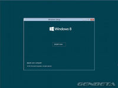
En el siguiente paso hemos de introducir la clave de producto que el fabricante ha puesto a disposición de los usuarios en la página de descarga: DNJXJ-7XBW8-2378T-X22TX-BKG7J
Aceptamos el acuerdo de licencia y pasamos al punto en que hemos de tomar la primera decisión: actualización o instalación personalizada. Esto es muy importante en el caso de realizar la instalación en un equipo que ya disponga de un sistema operativo instalado, porque habremos de designar particiones.
En nuestra instalación no tenemos nada que decidir y asignamos el disco virtual completo (20 GB en la instalación por defecto).
Ahora nos enfrentamos a la parte más lenta de la instalación, la copia de archivos desde la imagen ISO, la descompresión de archivos, instalación de funciones del sistema operativo, y actualizaciones si las hubiere.
Cuando finaliza el proceso, el sistema se reinicia de forma automática tras unos segundos, que podemos abreviar pulsando el control “Restart now”.
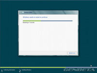
El sistema ya está instalado, y tras el reinicio y una sucesión de pantallas negras con varios avisos (Preparing, Getting devices ready, Getting system ready) y el pez de colores, la máquina se reinicia otra vez.
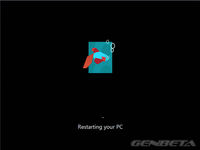
Aparece durante unos segundos de nuevo el pez, con repetición del aviso Preparing, y por fin llegamos a la pantalla de personalización. Aquí asignaremos un nombre a la máquina y elegiremos un color de fondo entre los nueve posibles.
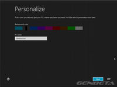
Una vez completado el proceso anterior, aparece la pantalla de ajustes. Disponemos de dos opciones: configuración exprés y a medida. He seleccionado la primera por las características de esta prueba.
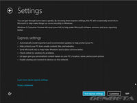
En el siguiente paso hemos de decidir si deseamos asociar nuestra instalación a un Windows ID o no. En el primer caso, la asociación nos permitirá descargar de forma cómoda aplicaciones desde Windows Store, acceder a archivos y fotos desde cualquier parte y sincronizar las preferencias desde cualquier equipo. La opción elegida ha sido asociar la instalación con mi Windows ID.
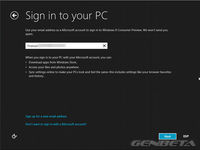
Tras unos instantes, podemos ingresar la clave para que posteriormente podamos conectar con otros servicios Microsoft de forma automática (Messenger, Hotmail, Xbox Live y Windows Live Services).

Ahora pasaremos por tres pantallas negras más —sin pececito— mientras sincroniza con nuestra cuenta, y una vez finalizado el proceso de ajustes, estaremos en la pantalla de bienvenida.
Por fin hemos terminado, Windows 8 Consumer Preview está listo para usar y disfrutar de la nueva joya de la corona de Microsoft. Tendremos a la vista la primera imagen que ilustra el artículo. En la próxima ocasión que arranquemos el sistema, si tenemos asociada una imagen a nuestra cuenta, aparecerá en la pantalla de bienvenida.
Windows 8 Consumer Preview, primera impresión
Si habéis tenido la paciencia de llegar hasta aquí, cosa que agradezco, os puede haber parecido que la instalación es larga y engorrosa. Nada más lejos de la realidad. Quitando la parte de copia y descompresión de archivos, el proceso es muy rápido.
Otra cuestión distinta será realizar una instalación conviviendo con un sistema previo instalado. Esto no es aconsejable porque estamos ante una beta, cuya estabilidad y fiabilidad no conocemos a priori, que pudiera dañar el sistema.

Lo recomendable es instalar en una partición aislada, y si es en otro disco duro mejor, para no tocar el MBR del disco principal y poder seleccionar el arranque a través de la BIOS. Si sólo os mueve la curiosidad, lo mejor es crear una máquina virtual sin más complicaciones, siguiendo los pasos descritos aquí.
En breve, vamos a realizar una instalación completa independiente sobre una máquina de 64 bits, para analizar a fondo todo lo que nos brinda esta Windows 8 Consumer Preview que, os anticipo, es sencillamente espectacular. Después de haber tenido la experiencia con la prueba de su versión antecesora, Windows 8 Developer Preview, la beta que os traemos hoy entra en otra dimensión, fruto de un gran trabajo por parte de Microsoft.
Web | Descarga
En Genbeta | Windows 8: todo lo que necesitas saber | Windows 8 Consumer Preview ya se puede descargar
Wed, 29 Feb 2012 14:24:24 GMT
Windows 8 Consumer Preview ya se puede descargar
Windows 8 Consumer Preview ya se puede descargar
Mientras nuestros compañeros están ofreciendo toda la información en directo y a través de Twitter sobre el evento de presentación de Windows 8, el próximo sistema operativo de Microsoft, las imágenes ISO de la versión de prueba Windows 8 Consumer Preview han sido liberadas y ya se pueden descargar. Microsoft ha puesto a disposición de los usuarios imágenes en cuatro idiomas: Inglés, Chino simplificado, Francés y Alemán. Cada una de ellas se puede obtener en versión 64-bit (x64) y 32-bit (x86), con unos tamaños de descarga aproximados de 3,4 GB en el primer caso y 2,5 GB en el segundo. En Chino ocupan algo más. Si deseamos realizar una instalación, conviene saber de antemano si nuestro equipo es compatible con el nuevo sistema operativo. Para este propósito el fabricante ofrece una herramienta denominada Windows 8 Consumer Preview Setup. Esta aplicación comprobará si nuestra máquina puede ejecutar Windows 8 Consumer Preview y seleccionará la imagen ISO apropiada. No olvidéis tomar nota del número clave de producto, necesario para la instalación, que está disponible en la página de descarga. Web | Descarga
Mientras nuestros compañeros están ofreciendo toda la información en directo y a través de Twitter sobre el evento de presentación de Windows 8, el próximo sistema operativo de Microsoft, las imágenes ISO de la versión de prueba Windows 8 Consumer Preview han sido liberadas y ya se pueden descargar.
Microsoft ha puesto a disposición de los usuarios imágenes en cuatro idiomas: Inglés, Chino simplificado, Francés y Alemán. Cada una de ellas se puede obtener en versión 64-bit (x64) y 32-bit (x86), con unos tamaños de descarga aproximados de 3,4 GB en el primer caso y 2,5 GB en el segundo. En Chino ocupan algo más.
Si deseamos realizar una instalación, conviene saber de antemano si nuestro equipo es compatible con el nuevo sistema operativo. Para este propósito el fabricante ofrece una herramienta denominada Windows 8 Consumer Preview Setup. Esta aplicación comprobará si nuestra máquina puede ejecutar Windows 8 Consumer Preview y seleccionará la imagen ISO apropiada. No olvidéis tomar nota del número clave de producto, necesario para la instalación, que está disponible en la página de descarga.
Web | Descarga
Wed, 29 Feb 2012 10:03:59 GMT
Steven Sinofsky, el artífice de Windows 8 y el probable próximo CEO de Microsoft
Steven Sinofsky, el artífice de Windows 8 y el probable próximo CEO de Microsoft
Estamos a pocas horas de conocer la versión Consumer Preview de Windows 8, una versión de Windows que va a cambiar fuertemente el sistema operativo ampliamente más usado del mundo en el mercado de ordenadores. Lo veremos a las tres de la tarde aquí mismo, y seguramente de la mano del presidente de la división Windows Steven Sinofsky, personaje que según Business Insider está destinado a ser el próximo CEO de Microsoft. Steven ya ha aparecido en algunas presentaciones de Microsoft, sobretodo de Windows 8, y de su boca han salido confirmaciones importantes como la de la tienda de aplicaciones oficial que llevará el sistema. Business Insider nos recuerda, curiosamente, a que Steve jugaba hace tres años emitiendo una nota de prensa imaginaria de finales del 2012 en la que describía una versión mucho más “humana” de Windows. Sorprendentemente, la predicción se va a hacer realidad. Las armas de Sinofsky son, preciosamente, que ha cumplido con las agendas que se había propuesto y ha logrado unificar esfuerzos y divisiones de la compañía en torno a Windows 8. Gracias a eso, Sinofsky ha conseguido el respeto tanto de Steve Ballmer (que tuvo el cargo de presidente de la división Windows antes de ser CEO) y de Bill Gates. Tiene un carácter muy fuerte, que ha cosechado el odio de muchas personas que han trabajado con él. Pero aun así, “hasta sus mayores detractores admiten que es brillante“. En la fuente lo tienen claro: a menos que Windows 8 sea un fracaso, Steven Sinofsky reemplazará tarde o temprano a Ballmer como CEO de Microsoft. Y eso será bueno, porque significará una competencia más fuerte desde Redmond. Y la competencia siempre es buena. Empezaremos a ver este cambio en apenas tres horas. Vía | Business Insider Imagen | BUILDWindows
Estamos a pocas horas de conocer la versión Consumer Preview de Windows 8, una versión de Windows que va a cambiar fuertemente el sistema operativo ampliamente más usado del mundo en el mercado de ordenadores. Lo veremos a las tres de la tarde aquí mismo, y seguramente de la mano del presidente de la división Windows Steven Sinofsky, personaje que según Business Insider está destinado a ser el próximo CEO de Microsoft.
Steven ya ha aparecido en algunas presentaciones de Microsoft, sobretodo de Windows 8, y de su boca han salido confirmaciones importantes como la de la tienda de aplicaciones oficial que llevará el sistema. Business Insider nos recuerda, curiosamente, a que Steve jugaba hace tres años emitiendo una nota de prensa imaginaria de finales del 2012 en la que describía una versión mucho más “humana” de Windows. Sorprendentemente, la predicción se va a hacer realidad. Las armas de Sinofsky son, preciosamente, que ha cumplido con las agendas que se había propuesto y ha logrado unificar esfuerzos y divisiones de la compañía en torno a Windows 8.
Gracias a eso, Sinofsky ha conseguido el respeto tanto de Steve Ballmer (que tuvo el cargo de presidente de la división Windows antes de ser CEO) y de Bill Gates. Tiene un carácter muy fuerte, que ha cosechado el odio de muchas personas que han trabajado con él. Pero aun así, “hasta sus mayores detractores admiten que es brillante“. En la fuente lo tienen claro: a menos que Windows 8 sea un fracaso, Steven Sinofsky reemplazará tarde o temprano a Ballmer como CEO de Microsoft. Y eso será bueno, porque significará una competencia más fuerte desde Redmond. Y la competencia siempre es buena.
Empezaremos a ver este cambio en apenas tres horas.
Vía | Business Insider
Imagen | BUILDWindows
Wed, 29 Feb 2012 07:42:52 GMT
Flickr mejora su diseño introduciendo las vistas justificadas de imágenes
Flickr mejora su diseño introduciendo las vistas justificadas de imágenes
Ya nos lo anticipaba nuestro compañero Gallego hace unos días, Flickr tenía preparada una batería de novedades en su interfaz para intentar taponar la pérdida de usuarios que se iban para otros servicios. De momento el cambio ya ha comenzado yFlickr mejora su diseño introduciendo las vistas justificadas de imágenes que crean un collage aprovechando todo el espacio disponible para mostrar las fotos de nuestros contactos. Parece que tienen “horror vacui” al no dejar ningún espacio en blanco, pero lo cierto es que no queda mal del todo, mostrando las imágenes en distintos tamaños. Prometen incorporar esta opción de vistas para otras páginas de Flickr, ya que en mi opinión dejarlo sólo para los contactos limita bastante su impacto. Está bien cuando queremos ver de forma rápida las fotos de un nuevo álbum pero quizás me gustaría verlo de esta manera cuando realizo alguna búsqueda de imágenes. Este diseño respeta la relación de aspecto original y nunca recortará las imágenes. Realmente queda bien cuando tenemos imágenes panorámicas y de distinto tamaño, donde queda un mosaico realmente vistoso. Por último, al situar el cursor sobre la imagen nos aparecerán unos iconos que nos permitirán marcar la imagen como favorita, comentarla o verla con detalle en el lightbox. Una forma sencilla de interactuar con las imágenes de nuestros contactos. Esperemos que no tarden mucho en llevarlo a otras páginas. La nueva vista ya aparece disponible para los usuarios y se irá mostrando disponible de forma progresiva en los próximos días. Lo cierto es que me parece un acierto y muy intuitiva sobre todo para comentar de forma rápida una imagen. Más Información | Blog Flickr En Genbeta | Flickr impide que las imágenes con copyright se compartan en Pinterest

Ya nos lo anticipaba nuestro compañero Gallego hace unos días, Flickr tenía preparada una batería de novedades en su interfaz para intentar taponar la pérdida de usuarios que se iban para otros servicios. De momento el cambio ya ha comenzado yFlickr mejora su diseño introduciendo las vistas justificadas de imágenes que crean un collage aprovechando todo el espacio disponible para mostrar las fotos de nuestros contactos.
Parece que tienen “horror vacui” al no dejar ningún espacio en blanco, pero lo cierto es que no queda mal del todo, mostrando las imágenes en distintos tamaños. Prometen incorporar esta opción de vistas para otras páginas de Flickr, ya que en mi opinión dejarlo sólo para los contactos limita bastante su impacto. Está bien cuando queremos ver de forma rápida las fotos de un nuevo álbum pero quizás me gustaría verlo de esta manera cuando realizo alguna búsqueda de imágenes.
Este diseño respeta la relación de aspecto original y nunca recortará las imágenes. Realmente queda bien cuando tenemos imágenes panorámicas y de distinto tamaño, donde queda un mosaico realmente vistoso. Por último, al situar el cursor sobre la imagen nos aparecerán unos iconos que nos permitirán marcar la imagen como favorita, comentarla o verla con detalle en el lightbox. Una forma sencilla de interactuar con las imágenes de nuestros contactos.
Esperemos que no tarden mucho en llevarlo a otras páginas. La nueva vista ya aparece disponible para los usuarios y se irá mostrando disponible de forma progresiva en los próximos días. Lo cierto es que me parece un acierto y muy intuitiva sobre todo para comentar de forma rápida una imagen.
Más Información | Blog Flickr
En Genbeta | Flickr impide que las imágenes con copyright se compartan en Pinterest
Tue, 28 Feb 2012 21:20:00 GMT
Google+ no va tan bien como parece: sus usuarios sólo lo usan 3 minutos de media al mes
Google+ no va tan bien como parece: sus usuarios sólo lo usan 3 minutos de media al mes
Desde que salió Google+ hemos visto cómo marcaba verdaderos récords en número de usuarios: en unos meses logró marcas que a otros como Facebook o Twitter les había costado bastante más. Sin embargo, los usuarios no lo son todo. El último estudio de ComScore ha medido el tiempo que pasan los usuarios en Google+, y no es muy alentador: tres minutos de media al mes. Por comparar, en Facebook los usuarios pasan unas 7 horas de media al mes. Pero, ¿qué está fallando? Por falta de promoción no será: han sacado hasta anuncios de televisión en Estados Unidos. Y por si fuera poco están integrando Google+ con el resto de productos: que si Gmail, Search, Reader… Aquí se juntan dos cosas. Primero, que ha habido muchos usuarios (entre los que me incluyo) que han entrado por curiosidad y han acabado abandonando la cuenta. Dada la difusión que tuvo en el lanzamiento, es totalmente normal que muchos usuarios estén inactivos. Por desgracia, no podemos saber cuántos son porque ComScore sólo da la media de todos los usuarios: no sabemos cómo se agrupan ni la media de tiempo de los usuarios activos. La otra cuestión que afecta es más profunda que un problema de medición: ¿qué hueco cubre Google+? ¿Qué hace que no hagan las demás redes sociales? Sí, tiene cosas interesantes como las Quedadas o los círculos, pero, ¿son cosas que de verdad te harían migrar de una red social a otra? Porque ese es el problema de esta red. Otras redes, como Tumblr, Pinterest, Foursquare, Instagram… no pretenden ser tu centro social, sólo un añadido y es por eso por lo que pueden tener éxito. Google+ no. Google+ quiere reemplazar a Twitter y a Facebook. El problema es que es casi imposible mover a tantos usuarios (el famoso efecto red) y tampoco ofrece tanto valor como para que merezca la pena el cambio. No queda espacio para él. Creo que Google está fallando con Google+. He de reconocer que en un principio parecía muy prometedor, pero está perdiendo interés a marchas forzadas. Sí, aportan nuevas ideas muy interesantes (los círculos para gestionar contactos están muy bien pensados) pero no son lo suficiente como para mover a la gente a su red. Y lo peor no es que Google+ esté fallando. Los de Mountain View están poniendo toda la carne en el asador con su red social, integrándola con el resto de productos. Y si Google+ no tiene valor, toda esa integración tan maravillosa hará más daño que bien. Desde mi punto de vista, creo que Google debería convencerse de que la estrategia de “Google+ con calzador” está fallando y que puede perjudicar mucho a los servicios que ya tiene. Vía | The Wall Street Journal
Desde que salió Google+ hemos visto cómo marcaba verdaderos récords en número de usuarios: en unos meses logró marcas que a otros como Facebook o Twitter les había costado bastante más.
Sin embargo, los usuarios no lo son todo. El último estudio de ComScore ha medido el tiempo que pasan los usuarios en Google+, y no es muy alentador: tres minutos de media al mes. Por comparar, en Facebook los usuarios pasan unas 7 horas de media al mes.
Pero, ¿qué está fallando? Por falta de promoción no será: han sacado hasta anuncios de televisión en Estados Unidos. Y por si fuera poco están integrando Google+ con el resto de productos: que si Gmail, Search, Reader…
Aquí se juntan dos cosas. Primero, que ha habido muchos usuarios (entre los que me incluyo) que han entrado por curiosidad y han acabado abandonando la cuenta. Dada la difusión que tuvo en el lanzamiento, es totalmente normal que muchos usuarios estén inactivos. Por desgracia, no podemos saber cuántos son porque ComScore sólo da la media de todos los usuarios: no sabemos cómo se agrupan ni la media de tiempo de los usuarios activos.
La otra cuestión que afecta es más profunda que un problema de medición: ¿qué hueco cubre Google+? ¿Qué hace que no hagan las demás redes sociales? Sí, tiene cosas interesantes como las Quedadas o los círculos, pero, ¿son cosas que de verdad te harían migrar de una red social a otra?
Porque ese es el problema de esta red. Otras redes, como Tumblr, Pinterest, Foursquare, Instagram… no pretenden ser tu centro social, sólo un añadido y es por eso por lo que pueden tener éxito. Google+ no. Google+ quiere reemplazar a Twitter y a Facebook. El problema es que es casi imposible mover a tantos usuarios (el famoso efecto red) y tampoco ofrece tanto valor como para que merezca la pena el cambio. No queda espacio para él.
Creo que Google está fallando con Google+. He de reconocer que en un principio parecía muy prometedor, pero está perdiendo interés a marchas forzadas. Sí, aportan nuevas ideas muy interesantes (los círculos para gestionar contactos están muy bien pensados) pero no son lo suficiente como para mover a la gente a su red.
Y lo peor no es que Google+ esté fallando. Los de Mountain View están poniendo toda la carne en el asador con su red social, integrándola con el resto de productos. Y si Google+ no tiene valor, toda esa integración tan maravillosa hará más daño que bien. Desde mi punto de vista, creo que Google debería convencerse de que la estrategia de “Google+ con calzador” está fallando y que puede perjudicar mucho a los servicios que ya tiene.
Vía | The Wall Street Journal
Tue, 28 Feb 2012 18:40:06 GMT
Google ofrece un millón de dólares en premios en Pwn2Own
Google ofrece un millón de dólares en premios en Pwn2Own
A Google le fue muy bien el año pasado en el concurso Pwn2Own, y en éste ha decidido subir la apuesta, ofreciendo premios por valor de 1.000.000 de dólares para aquellos que consigan vulnerar la seguridad de Chrome. La próxima semana, en el marco de la conferencia sobre seguridad CanSecWest, los especialistas van a poner a prueba la fortaleza de sistemas operativos y navegadores. Google premiará a los concursantes galardonados con premios que oscilan entre los 60.000 y los 20.000 dólares, además de un Chromebook. Chrome no ha caído hasta ahora en Pwn2Own, y una de las razones citadas por los concursantes es la dificultad de saltar la seguridad del sandbox del navegador de Google. ¿Conseguirá alguien este año la hazaña? Pronto lo veremos. Gracias a Nahuel Siviero por la pista. Vía | The Chromium Blog Imagen | Alex Lillo
A Google le fue muy bien el año pasado en el concurso Pwn2Own, y en éste ha decidido subir la apuesta, ofreciendo premios por valor de 1.000.000 de dólares para aquellos que consigan vulnerar la seguridad de Chrome.
La próxima semana, en el marco de la conferencia sobre seguridad CanSecWest, los especialistas van a poner a prueba la fortaleza de sistemas operativos y navegadores. Google premiará a los concursantes galardonados con premios que oscilan entre los 60.000 y los 20.000 dólares, además de un Chromebook.
Chrome no ha caído hasta ahora en Pwn2Own, y una de las razones citadas por los concursantes es la dificultad de saltar la seguridad del sandbox del navegador de Google. ¿Conseguirá alguien este año la hazaña? Pronto lo veremos.
Gracias a Nahuel Siviero por la pista.
Vía | The Chromium Blog
Imagen | Alex Lillo
Tue, 28 Feb 2012 16:21:10 GMT
GroupMe actualiza su versión para Windows Phone
GroupMe actualiza su versión para Windows Phone
El equipo de desarrollo de GroupMe ha anunciado hoy una versión completamente renovada de su aplicación para Windows Phone. Ahora GroupMe ofrece a los usuarios de Windows Phone características adicionales con la última versión del producto, incluida la capacidad de fijar los grupos a la pantalla de inicio, notificación en el mosaico y cambio rápido de aplicaciones. GroupMe es un servicio de mensajería gratuito para grupos de usuarios, que se puede utilizar desde cualquier teléfono, permitiendo a sus integrantes estar en contacto en todo momento. La aplicación hace uso de la conexión de datos por defecto y si ésta falla, la recepción de mensajes podrá realizarse por SMS. La nueva versión de GroupMe para Windows Phone, que se ha desarrollado en estrecha colaboración con Microsoft, está disponible para su descarga de forma gratuita desde Windows Phone Marketplace. GroupMe tiene un tamaño de descarga de 1 MB y requiere Windows Phone 7.5 o superior. Web | Descarga En Genbeta | GroupMe lanza su versión 3.0 y llega a España
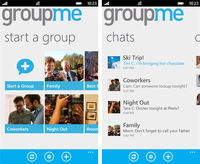
El equipo de desarrollo de GroupMe ha anunciado hoy una versión completamente renovada de su aplicación para Windows Phone. Ahora GroupMe ofrece a los usuarios de Windows Phone características adicionales con la última versión del producto, incluida la capacidad de fijar los grupos a la pantalla de inicio, notificación en el mosaico y cambio rápido de aplicaciones.
GroupMe es un servicio de mensajería gratuito para grupos de usuarios, que se puede utilizar desde cualquier teléfono, permitiendo a sus integrantes estar en contacto en todo momento. La aplicación hace uso de la conexión de datos por defecto y si ésta falla, la recepción de mensajes podrá realizarse por SMS.
La nueva versión de GroupMe para Windows Phone, que se ha desarrollado en estrecha colaboración con Microsoft, está disponible para su descarga de forma gratuita desde Windows Phone Marketplace. GroupMe tiene un tamaño de descarga de 1 MB y requiere Windows Phone 7.5 o superior.
Web | Descarga
En Genbeta | GroupMe lanza su versión 3.0 y llega a España
Tue, 28 Feb 2012 12:55:10 GMT
Android 5.0 "Jelly bean" podría lanzarse en otoño
Android 5.0 "Jelly bean" podría lanzarse en otoño
Extraño mundo el de la “rumorología”. Hace pocas días, nuestro compañero Miguel López avanzaba una fecha para la salida al mercado de Android 5.0 “Jelly bean”: junio. Ahora parece que los rumores apuntan al otoño para el debut de la quinta generación del sistema operativo del androide. La liebre la ha soltado esta vez Hiroshi Lockheimer, vicepresidente de ingeniería para móviles de Google, en declaraciones concedidas a Computer World. Teniendo en cuenta la fecha del lanzamiento de la versión actual, tiene más sentido que la nueva aparezca un año después. Google está luchando contra el poderío de Apple como puede, desarrollando contra reloj lo que está en su mano: el sistema operativo. Otra cuestión es la capacidad de los fabricantes de teléfonos para ponerse al día, que por lo visto con Ice Cream Sandwich no es todo lo rápido que Google desearía. La compañía de la manzana controla hardware y software, otorgándole una ventaja que, ahora mismo, Google no puede enjugar a pesar de las últimas cifras publicadas respecto de su penetración en el mercado. Vía | Techcrunch Imagen | Garry Knight En Genbeta | Android ya tiene cantidad, ahora sólo le falta calidad
Extraño mundo el de la “rumorología”. Hace pocas días, nuestro compañero Miguel López avanzaba una fecha para la salida al mercado de Android 5.0 “Jelly bean”: junio. Ahora parece que los rumores apuntan al otoño para el debut de la quinta generación del sistema operativo del androide.
La liebre la ha soltado esta vez Hiroshi Lockheimer, vicepresidente de ingeniería para móviles de Google, en declaraciones concedidas a Computer World. Teniendo en cuenta la fecha del lanzamiento de la versión actual, tiene más sentido que la nueva aparezca un año después.
Google está luchando contra el poderío de Apple como puede, desarrollando contra reloj lo que está en su mano: el sistema operativo. Otra cuestión es la capacidad de los fabricantes de teléfonos para ponerse al día, que por lo visto con Ice Cream Sandwich no es todo lo rápido que Google desearía.
La compañía de la manzana controla hardware y software, otorgándole una ventaja que, ahora mismo, Google no puede enjugar a pesar de las últimas cifras publicadas respecto de su penetración en el mercado.
Vía | Techcrunch
Imagen | Garry Knight
En Genbeta | Android ya tiene cantidad, ahora sólo le falta calidad
Tue, 28 Feb 2012 09:41:26 GMT
LookAd, una app que lleva las ofertas de los escaparates al teléfono móvil
LookAd, una app que lleva las ofertas de los escaparates al teléfono móvil
Conseguir las mejores ofertas de bienes y servicios es siempre interesante, y disponer de ellas en el aparato que nos acompaña en todas nuestras actividades también. Esta es la idea de LookAd, una aplicación que trae a nuestro iPhone las ofertas de los escaparates. Con LookAd el usuario puede crear distintos buzones y elegir el tipo de ofertas (restauración, ropa, ocio, supermerados, etc.), que desea recibir en ellos. De esta forma la publicidad puede convivir con el uso que le damos al móvil sin que sea intrusiva y molesta. LookAd también representa una oportunidad para los negocios pequeños, que pueden difundir sus ofertas mediante la aplicación, sin necesidad de que intervengan intermediarios, dirigiendo sus promociones a un público objetivo que ya ha demostrado interés mediante la creación de los distintos buzones. LookAd ha lanzado la versión 2.0 hace unos días en la tienda de aplicaciones de Apple, tiene un tamaño de descarga de 9,1 MB y es compatible con iPhone, iPod Touch y las tabletas iPad . Respecto del sistema operativo, requiere iOS 3,1 o superior. La aplicación es gratuita. Web | Descarga Vídeo | YouTube En Tecnología Pyme | LookAd, anuncios de tu negocio al móvil de clientes potenciales
Conseguir las mejores ofertas de bienes y servicios es siempre interesante, y disponer de ellas en el aparato que nos acompaña en todas nuestras actividades también. Esta es la idea de LookAd, una aplicación que trae a nuestro iPhone las ofertas de los escaparates.
Con LookAd el usuario puede crear distintos buzones y elegir el tipo de ofertas (restauración, ropa, ocio, supermerados, etc.), que desea recibir en ellos. De esta forma la publicidad puede convivir con el uso que le damos al móvil sin que sea intrusiva y molesta.
LookAd también representa una oportunidad para los negocios pequeños, que pueden difundir sus ofertas mediante la aplicación, sin necesidad de que intervengan intermediarios, dirigiendo sus promociones a un público objetivo que ya ha demostrado interés mediante la creación de los distintos buzones.
LookAd ha lanzado la versión 2.0 hace unos días en la tienda de aplicaciones de Apple, tiene un tamaño de descarga de 9,1 MB y es compatible con iPhone, iPod Touch y las tabletas iPad . Respecto del sistema operativo, requiere iOS 3,1 o superior. La aplicación es gratuita.
Web | Descarga
Vídeo | YouTube
En Tecnología Pyme | LookAd, anuncios de tu negocio al móvil de clientes potenciales
Thu, 01 Mar 2012 09:00:00 GMT
El navegador Dolphin incluye un sistema de reconocimiento de voz
El navegador Dolphin incluye un sistema de reconocimiento de voz
Siguiendo la estela de Siri han surgido en Android multitud de aplicaciones que han buscado emular con mayor o menor acierto su sistema de reconocimiento de voz. En el caso que hoy nos ocupa, se trata de una opción que ha sido incluida en Dolphin, uno de los múltiples navegadores web de este sistema móvil. La novedad lleva por nombre Sonar y ha sido presentada aprovechando el marco del Mobile World Congress de Barcelona. Mediante comandos de voz, permite realizar tareas habituales de navegación como efectuar búsquedas, desplazarnos por las pestañas, compartir en redes sociales o agregar favoritos. Para poder probar esta solución, solo hay que descargar la última versión de Dolphin (7.4.0) en el Android Market. Desde luego, como valor diferencial para llamar la atención entre tanto navegador móvil, la idea no está nada mal. Vía | Xataka Móvil Vídeo | YouTube
Siguiendo la estela de Siri han surgido en Android multitud de aplicaciones que han buscado emular con mayor o menor acierto su sistema de reconocimiento de voz. En el caso que hoy nos ocupa, se trata de una opción que ha sido incluida en Dolphin, uno de los múltiples navegadores web de este sistema móvil.
La novedad lleva por nombre Sonar y ha sido presentada aprovechando el marco del Mobile World Congress de Barcelona. Mediante comandos de voz, permite realizar tareas habituales de navegación como efectuar búsquedas, desplazarnos por las pestañas, compartir en redes sociales o agregar favoritos.
Para poder probar esta solución, solo hay que descargar la última versión de Dolphin (7.4.0) en el Android Market. Desde luego, como valor diferencial para llamar la atención entre tanto navegador móvil, la idea no está nada mal.
Vía | Xataka Móvil
Vídeo | YouTube
Thu, 01 Mar 2012 01:30:00 GMT
Así es la sencilla aplicación de WordPress.com para Windows 8
Así es la sencilla aplicación de WordPress.com para Windows 8
Durante la presentación esta tarde de la Consumer Preview de Windows 8, la nueva tienda de aplicaciones que Microsoft estrenará junto al sistema operativo ha tenido un protagonismo capital. Una de las herramientas que hemos podido ver de pasada es la de WordPress.com (no confundir con WordPress a secas). Se trata de una aplicación muy sencilla, por supuesto con la imprescindible interfaz Metro, destinada principalmente a navegar en el contenido de WordPress.com. Cuenta con opciones para publicar en nuestros blogs dentro de esta red, claro está, pero no penséis en ella como una solución completa porque queda lejos de ser una alternativa real a un panel de WordPress. Cumple muy bien el objetivo de servir de guía para bucear por el contenido de una forma diferente y atractiva, facilitando especialmente el “reblogeo” y las vías para compartir enlaces o fotos, pero poco más allá. Teniendo en cuenta la alianza entre estas casa, estaría bien que aprovecharan la ocasión para preparar algo más completo. Podéis encontrar la aplicación en la Windows Store. En Genbeta | Microsoft versus Google versus Apple: la batalla vuelve a estar servida, Microsoft desvela su tienda de aplicaciones para Windows 8
Durante la presentación esta tarde de la Consumer Preview de Windows 8, la nueva tienda de aplicaciones que Microsoft estrenará junto al sistema operativo ha tenido un protagonismo capital. Una de las herramientas que hemos podido ver de pasada es la de WordPress.com (no confundir con WordPress a secas).
Se trata de una aplicación muy sencilla, por supuesto con la imprescindible interfaz Metro, destinada principalmente a navegar en el contenido de WordPress.com. Cuenta con opciones para publicar en nuestros blogs dentro de esta red, claro está, pero no penséis en ella como una solución completa porque queda lejos de ser una alternativa real a un panel de WordPress.
Cumple muy bien el objetivo de servir de guía para bucear por el contenido de una forma diferente y atractiva, facilitando especialmente el “reblogeo” y las vías para compartir enlaces o fotos, pero poco más allá. Teniendo en cuenta la alianza entre estas casa, estaría bien que aprovecharan la ocasión para preparar algo más completo. Podéis encontrar la aplicación en la Windows Store.
En Genbeta | Microsoft versus Google versus Apple: la batalla vuelve a estar servida, Microsoft desvela su tienda de aplicaciones para Windows 8
Wed, 29 Feb 2012 23:30:00 GMT
Microsoft publica también la beta de Visual Studio 11
Microsoft publica también la beta de Visual Studio 11
Esta tarde se ha hablado y mucho de la llegada de la Consumer Preview de Windows 8, pero Microsoft también ha publicado hoy otro producto en formato beta. Se trata de Visual Studio 11, herramienta que llega haciendo mucho menos ruido pero con bastante atractivo para su público objetivo. La descarga se ofrece en cuatro versiones: Ultimate, Premium, Professional y Test Professional. Como opciones disponibles para los programadores interesados encontramos distintos formatos de instalación y packs para seis idiomas entre los que no está el castellano. La beta es compatible con Windows 7 y 8, y requiere como mínimo un procesador de 1,6 GHz, 1 GB de RAM (o 1,5 si vamos a probarlo en una máquina virtual), 10 GB de espacio libre en un disco capaz de funcionar a 5400 RPM y una tarjeta de vídeo compatible con DirectX 9 y resoluciones de 1024×768 o superior. Podéis encontrar además una importante cantidad de descargas relacionadas aquí. Vía | Genbeta Dev > Microsoft Press En Genbeta | Confirmada la fecha de lanzamiento de la beta de Windows 8 Server y Visual Studio 11

Esta tarde se ha hablado y mucho de la llegada de la Consumer Preview de Windows 8, pero Microsoft también ha publicado hoy otro producto en formato beta. Se trata de Visual Studio 11, herramienta que llega haciendo mucho menos ruido pero con bastante atractivo para su público objetivo.
La descarga se ofrece en cuatro versiones: Ultimate, Premium, Professional y Test Professional. Como opciones disponibles para los programadores interesados encontramos distintos formatos de instalación y packs para seis idiomas entre los que no está el castellano.
La beta es compatible con Windows 7 y 8, y requiere como mínimo un procesador de 1,6 GHz, 1 GB de RAM (o 1,5 si vamos a probarlo en una máquina virtual), 10 GB de espacio libre en un disco capaz de funcionar a 5400 RPM y una tarjeta de vídeo compatible con DirectX 9 y resoluciones de 1024×768 o superior. Podéis encontrar además una importante cantidad de descargas relacionadas aquí.
Vía | Genbeta Dev > Microsoft Press
En Genbeta | Confirmada la fecha de lanzamiento de la beta de Windows 8 Server y Visual Studio 11
Wed, 29 Feb 2012 21:42:47 GMT
Facebook tendrá Timeline para páginas de empresa y Facebook premium para rentabilizar los anuncios
Facebook tendrá Timeline para páginas de empresa y Facebook premium para rentabilizar los anuncios
Ya se venía rumoreando como avanzaban nuestros compañeros de Genbeta Social Media y hoy se ha confirmado que Facebook implantará también el nuevo timeline para las páginas que tengamos creadas, una opción que sin duda gusta en las empresas, las principales usuarias de la creación de páginas en Facebook. La fecha prevista es el 31 de Marzo, aunque ya puede verse en algunas empresas que han servido de piloto. Como principal novedad los administradores de las páginas tendrán acceso a un panel sobre el que realizar los cambios, enviar mensajes privados o ver las notificaciones. Las páginas tendrán la posibilidad de tener post fijos, para mantener las historias más importantes de las empresas más tiempo visibles durante siete días. Pero no se han quedado sólo aquí. Ahora con el nuevo timeline ven más posibilidades de rentabilizar con publicidad el nuevo diseño han decidido lanzar Facebook premium para comenzar a incluir anuncios en el newsfeed para aumentar la visibilidad, incluyendo también publicidad cuando los usuarios salgan de su sesión de Facebook con un anuncio gigante. Por último añade publicidad adaptada para móviles. No es una cuestión menor, puesto que con los anuncios situados en el lateral derecho los usarios están tan acostumbrados a verlos allí, que tienden a ignorarlos y es difícil que llamen la atención. Sin embargo, al incluirlos en el timeline, el anuncio tendrá mucha más visibilidad para el usuario, por lo tanto se cobrarán más caros al tener publicitariamente mejores niveles de conversión y un retorno de la inversión que aseguran es tres veces superior al que se venía consiguiendo hasta ahora. De esta manera aumentarán también los ingresos de la red social. Claro que no conviene abusar de este tipo de anuncios, más que nada porque acaban por cansar la usuario, irritarle y hacer que su experiencia sea peor valorada. La empresa decidirá que quiere divulgar y contratará a Facebook que será la encargada de presentarla de varias formas entre la comunidad de fans de la marca. Por lo tanto Facebook se asegura mantener bajo control la experiencia de usario, para que este no se llegue a sentir molesto, puesto que el mayor activo de la red es el número de usuarios que tiene y el tiempo que pasan dentro de la misma. Si al final el usuario se cansa, se irá a otra red y se acabó el negocio. Esperemos que Facebook no quiera exprimir demasiado estos recursos. Vía | Genbeta Social Media En Genbeta | Facebook lanza dos iniciativas para que la web móvil se equipare a las aplicaciones nativas Imagen | Flickr
Ya se venía rumoreando como avanzaban nuestros compañeros de Genbeta Social Media y hoy se ha confirmado que Facebook implantará también el nuevo timeline para las páginas que tengamos creadas, una opción que sin duda gusta en las empresas, las principales usuarias de la creación de páginas en Facebook. La fecha prevista es el 31 de Marzo, aunque ya puede verse en algunas empresas que han servido de piloto.
Como principal novedad los administradores de las páginas tendrán acceso a un panel sobre el que realizar los cambios, enviar mensajes privados o ver las notificaciones. Las páginas tendrán la posibilidad de tener post fijos, para mantener las historias más importantes de las empresas más tiempo visibles durante siete días.
Pero no se han quedado sólo aquí. Ahora con el nuevo timeline ven más posibilidades de rentabilizar con publicidad el nuevo diseño han decidido lanzar Facebook premium para comenzar a incluir anuncios en el newsfeed para aumentar la visibilidad, incluyendo también publicidad cuando los usuarios salgan de su sesión de Facebook con un anuncio gigante. Por último añade publicidad adaptada para móviles.
No es una cuestión menor, puesto que con los anuncios situados en el lateral derecho los usarios están tan acostumbrados a verlos allí, que tienden a ignorarlos y es difícil que llamen la atención. Sin embargo, al incluirlos en el timeline, el anuncio tendrá mucha más visibilidad para el usuario, por lo tanto se cobrarán más caros al tener publicitariamente mejores niveles de conversión y un retorno de la inversión que aseguran es tres veces superior al que se venía consiguiendo hasta ahora. De esta manera aumentarán también los ingresos de la red social.
Claro que no conviene abusar de este tipo de anuncios, más que nada porque acaban por cansar la usuario, irritarle y hacer que su experiencia sea peor valorada. La empresa decidirá que quiere divulgar y contratará a Facebook que será la encargada de presentarla de varias formas entre la comunidad de fans de la marca.
Por lo tanto Facebook se asegura mantener bajo control la experiencia de usario, para que este no se llegue a sentir molesto, puesto que el mayor activo de la red es el número de usuarios que tiene y el tiempo que pasan dentro de la misma. Si al final el usuario se cansa, se irá a otra red y se acabó el negocio. Esperemos que Facebook no quiera exprimir demasiado estos recursos.
Vía | Genbeta Social Media
En Genbeta | Facebook lanza dos iniciativas para que la web móvil se equipare a las aplicaciones nativas
Imagen | Flickr
Wed, 29 Feb 2012 16:33:05 GMT
Microsoft versus Google versus Apple: la batalla vuelve a estar servida
Microsoft versus Google versus Apple: la batalla vuelve a estar servida
Hoy el protagonismo del Mobile World Congress se lo ha llevado Microsoft, con el evento donde se ha presentado la versión Consumer Preview de Windows 8. Se trata de una versión beta, pero en un estado que ya demuestra sobradamente que en Redmond se han puesto las pilas. Van a pasar de estar detrás de Apple y Google en el mercado móvil a estar justo a su lado, formando un tercer gran frente. Windows 8 tiene todo lo que es necesario para luchar contra sus rivales: una tienda de aplicaciones, un look&feel mucho más agradable, unas capacidades táctiles asombrosas, compatibilidad con mucha variedad de dispositivos tradicionales o multitáctiles… es como si de un plumazo en Redmond hubieran hecho un sprint hasta llegar a igualar a los primeros de la carrera. ¿Cómo puede influir la filosofía de Windows 8, diferente a todas las demás, al resto de compañías? Para eso hace falta echarles un vistazo a los tres frentes por separado para comprender cómo ve el mercado cada compañía. Apple, por ejemplo, cree en que cada dispositivo debe tener su sistema operativo con interfaz optimizada a su pantalla. Y así es: los Mac cuentan con OS X mientras que iOS está presente con interfaces preparadas especialmente para el iPhone, el iPod touch y el iPad. Hasta hace poco OS X e iOS estaban comunicados de forma algo regular, pero iCloud lo está solucionando. Desde Cupertino ya nos han demostrado con OS X Mountain Lion que quieren que OS X e iOS se lleven mejor. Y ahí está el punto clave de Apple: está acercando cada vez más sus sistemas operativos de sobremesa pero nunca los llega a fusionar. Con el tiempo uno será el reflejo del otro, pero jamás será el mismo. Al menos por ahora. Su estrategia siempre ha sido diferente a las demás, pero hoy en día todo el mundo la está imitando de alguna u otra forma. Microsoft ataca de una forma completamente diferente: Un sistema operativo, Windows 8, valdrá para ordenadores de sobremesa, portátiles, tablets, ultrabooks, arquitectura ARM… la única excepción es Windows Phone, pero estamos hablando de algo tan semejante que se podría considerar lo mismo. Microsoft quiere una experiencia de uso exactamente igual en todos los dispositivos. Y mientras que un desarrollador tiene que crear interfaces diferentes para el iPhone y el iPad, en Windows 8 sólo tiene que modificar la interfaz muy ligeramente para adaptarse a los diferentes tamaños de pantallas sin preocuparse ni siquiera de la arquitectura. ¿Y Google? Microsoft le ha dado un buen puntapié esta tarde demostrando que Windows 8 es capaz de arrancar en ocho segundos. Chrome OS, el sistema operativo que se centra sólo en un navegador, se promocionaba precisamente por su rapidez de arranque en un tiempo similar. ¿Por qué conformarse con un navegador que arranca en ocho segundos cuando puedo acceder a un Windows completo esperando los mismos ocho segundos? OS X quizás tarda algo más en arrancar, pero los últimos MacBook Air también demuestran lo mismo. Entonces vale, dejemos a Chrome OS a un lado. Google tiene otro as en la manga, y es Android. La versión 5.0, llamada Jelly Bean, será supuestamente capaz de arrancar en ordenadores. Y con ello Google ya cubre todo el mercado como hacen sus competidores con un sistema libre y abierto lleno de posibilidades. Y si esta estrategia no funciona, Canonical ya nos ha hecho ver que hay más alternativas posibles: ¿por qué no meter nuestro sistema de sobremesa dentro del móvil? Ubuntu for Android puede ser el comienzo de algo muy interesante. Concluyendo: Microsoft quiere a Windows 8 dominando a todo el hardware y unificando las aplicaciones. Dedos, ratón… da igual como usemos el dispositivo. Apple quiere optimizar al máximo el suyo, pero por separado para garantizar la mejor experiencia de usuario posible. Una cosa para los dedos, otra para el ratón. Google es la que parece tener más armas, pero la sensación es que anda algo despistada. Pero lo importante es que antes Microsoft era la compañía que se había quedado atrás, y ahora no lo es ni mucho menos. Windows 8 llega dentro de unos meses. La competencia tiene ese tiempo para presentar su contraataque a un sistema operativo que ha despertado el interés de mucha gente. Ya se saben varios puntos acerca de sus planes. Esperemos que “dentro de unos meses” no sea demasiado tarde para Redmond. Más información | Windows 8 Consumer Preview En Genbeta | Todo lo que necesitas saber acerca de Windows 8
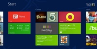
Hoy el protagonismo del Mobile World Congress se lo ha llevado Microsoft, con el evento donde se ha presentado la versión Consumer Preview de Windows 8. Se trata de una versión beta, pero en un estado que ya demuestra sobradamente que en Redmond se han puesto las pilas. Van a pasar de estar detrás de Apple y Google en el mercado móvil a estar justo a su lado, formando un tercer gran frente.
Windows 8 tiene todo lo que es necesario para luchar contra sus rivales: una tienda de aplicaciones, un look&feel mucho más agradable, unas capacidades táctiles asombrosas, compatibilidad con mucha variedad de dispositivos tradicionales o multitáctiles… es como si de un plumazo en Redmond hubieran hecho un sprint hasta llegar a igualar a los primeros de la carrera.
¿Cómo puede influir la filosofía de Windows 8, diferente a todas las demás, al resto de compañías? Para eso hace falta echarles un vistazo a los tres frentes por separado para comprender cómo ve el mercado cada compañía.
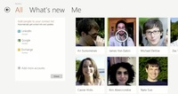
Apple, por ejemplo, cree en que cada dispositivo debe tener su sistema operativo con interfaz optimizada a su pantalla. Y así es: los Mac cuentan con OS X mientras que iOS está presente con interfaces preparadas especialmente para el iPhone, el iPod touch y el iPad. Hasta hace poco OS X e iOS estaban comunicados de forma algo regular, pero iCloud lo está solucionando. Desde Cupertino ya nos han demostrado con OS X Mountain Lion que quieren que OS X e iOS se lleven mejor.
Y ahí está el punto clave de Apple: está acercando cada vez más sus sistemas operativos de sobremesa pero nunca los llega a fusionar. Con el tiempo uno será el reflejo del otro, pero jamás será el mismo. Al menos por ahora. Su estrategia siempre ha sido diferente a las demás, pero hoy en día todo el mundo la está imitando de alguna u otra forma.
Microsoft ataca de una forma completamente diferente: Un sistema operativo, Windows 8, valdrá para ordenadores de sobremesa, portátiles, tablets, ultrabooks, arquitectura ARM… la única excepción es Windows Phone, pero estamos hablando de algo tan semejante que se podría considerar lo mismo. Microsoft quiere una experiencia de uso exactamente igual en todos los dispositivos. Y mientras que un desarrollador tiene que crear interfaces diferentes para el iPhone y el iPad, en Windows 8 sólo tiene que modificar la interfaz muy ligeramente para adaptarse a los diferentes tamaños de pantallas sin preocuparse ni siquiera de la arquitectura.
¿Y Google? Microsoft le ha dado un buen puntapié esta tarde demostrando que Windows 8 es capaz de arrancar en ocho segundos. Chrome OS, el sistema operativo que se centra sólo en un navegador, se promocionaba precisamente por su rapidez de arranque en un tiempo similar. ¿Por qué conformarse con un navegador que arranca en ocho segundos cuando puedo acceder a un Windows completo esperando los mismos ocho segundos? OS X quizás tarda algo más en arrancar, pero los últimos MacBook Air también demuestran lo mismo.
Entonces vale, dejemos a Chrome OS a un lado. Google tiene otro as en la manga, y es Android. La versión 5.0, llamada Jelly Bean, será supuestamente capaz de arrancar en ordenadores. Y con ello Google ya cubre todo el mercado como hacen sus competidores con un sistema libre y abierto lleno de posibilidades. Y si esta estrategia no funciona, Canonical ya nos ha hecho ver que hay más alternativas posibles: ¿por qué no meter nuestro sistema de sobremesa dentro del móvil? Ubuntu for Android puede ser el comienzo de algo muy interesante.
Concluyendo: Microsoft quiere a Windows 8 dominando a todo el hardware y unificando las aplicaciones. Dedos, ratón… da igual como usemos el dispositivo. Apple quiere optimizar al máximo el suyo, pero por separado para garantizar la mejor experiencia de usuario posible. Una cosa para los dedos, otra para el ratón. Google es la que parece tener más armas, pero la sensación es que anda algo despistada. Pero lo importante es que antes Microsoft era la compañía que se había quedado atrás, y ahora no lo es ni mucho menos.
Windows 8 llega dentro de unos meses. La competencia tiene ese tiempo para presentar su contraataque a un sistema operativo que ha despertado el interés de mucha gente. Ya se saben varios puntos acerca de sus planes. Esperemos que “dentro de unos meses” no sea demasiado tarde para Redmond.
Más información | Windows 8 Consumer Preview
En Genbeta | Todo lo que necesitas saber acerca de Windows 8
Wed, 29 Feb 2012 12:29:09 GMT
Seguimiento del evento Windows 8 Consumer Preview en directo
Seguimiento del evento Windows 8 Consumer Preview en directo
A las 15.00 hora peninsular española dará comienzo el evento de presentación de Windows 8 en el Mobile World Congress de Barcelona. Durante el mismo, Microsoft mostrará con todos los honores la Consumer Preview que vamos a poder probar como anticipo de su nuevo sistema operativo. Nosotros estamos allí y os vamos a contar en vivo todo lo que acontezca en el acto. Para ello, podéis acceder a la sección que hemos preparado para la cobertura en directo o estar al tanto de lo que publiquemos en twitter. Está previsto que el evento dure dos horas. Podéis ver el seguimiento completo del evento a continuación:
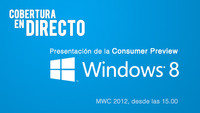
A las 15.00 hora peninsular española dará comienzo el evento de presentación de Windows 8 en el Mobile World Congress de Barcelona. Durante el mismo, Microsoft mostrará con todos los honores la Consumer Preview que vamos a poder probar como anticipo de su nuevo sistema operativo.
Nosotros estamos allí y os vamos a contar en vivo todo lo que acontezca en el acto. Para ello, podéis acceder a la sección que hemos preparado para la cobertura en directo o estar al tanto de lo que publiquemos en twitter. Está previsto que el evento dure dos horas.
Podéis ver el seguimiento completo del evento a continuación:
Wed, 29 Feb 2012 08:13:00 GMT
Genbeta seguirá en directo el evento de Windows 8 del Mobile World Congress
Genbeta seguirá en directo el evento de Windows 8 del Mobile World Congress
Llegamos al tercer día del Mobile World Congress en Barcelona, el día que Microsoft ha elegido para celebrar un evento donde mostrará la versión Consumer Preview de Windows 8. Weblogs SL estará presente en el evento, y os podremos ofrecer todo lo que pase en el escenario en un seguimiento en directo. Esta versión, que no deja de ser preliminar pero que mostrará el resultado de varios meses más de trabajo y desarrollo en Windows 8, se filtró parcialmente hace cerca de un mes y ya pudimos ver entonces cómo la influencia de la interfaz Metro llegaba incluso al tradicional panel de control de Windows. Será un gran cambio para Windows, que deja de centrarse en el escritorio y se adapta a los tablet cambiando su interfaz e incluso instaurando un nuevo ecosistema de aplicaciones. El evento empezará a las tres de la tarde, con lo que unos minutos antes empezaremos la cobertura mediante nuestra cuenta oficial de Twitter y en el blog. En cuanto el evento termine hablaremos de todas las novedades aquí mismo. En Genbeta | Todo lo que necesitas saber de Windows 8 En Xataka | Windows 8 Consumer Preview, te lo contamos desde su presentación
Llegamos al tercer día del Mobile World Congress en Barcelona, el día que Microsoft ha elegido para celebrar un evento donde mostrará la versión Consumer Preview de Windows 8. Weblogs SL estará presente en el evento, y os podremos ofrecer todo lo que pase en el escenario en un seguimiento en directo.
Esta versión, que no deja de ser preliminar pero que mostrará el resultado de varios meses más de trabajo y desarrollo en Windows 8, se filtró parcialmente hace cerca de un mes y ya pudimos ver entonces cómo la influencia de la interfaz Metro llegaba incluso al tradicional panel de control de Windows. Será un gran cambio para Windows, que deja de centrarse en el escritorio y se adapta a los tablet cambiando su interfaz e incluso instaurando un nuevo ecosistema de aplicaciones.
El evento empezará a las tres de la tarde, con lo que unos minutos antes empezaremos la cobertura mediante nuestra cuenta oficial de Twitter y en el blog. En cuanto el evento termine hablaremos de todas las novedades aquí mismo.
En Genbeta | Todo lo que necesitas saber de Windows 8
En Xataka | Windows 8 Consumer Preview, te lo contamos desde su presentación
Wed, 29 Feb 2012 05:10:00 GMT
"Estamos creciendo cada vez más": Hablamos con Rick Osterloh, director de producto y diseño de Skype
"Estamos creciendo cada vez más": Hablamos con Rick Osterloh, director de producto y diseño de Skype
Seguimos en el Mobile World Congress 2012 de Barcelona, donde nuestros amiguetes de Xataka, Xataka Móvil y Xataka Android también están transmitiendo todas las novedades importantes que nos está dando el evento. En Genbeta ya hemos hablado con Paul Mockapetris, inventor de la tecnología DNS y uno de los padres de internet tal y como lo conocemos en la actualidad. Ahora toca un reencuentro: Rick Osterloh, director de producto y marketing de Skype, se reúne con nosotros un año después para hablar de todo lo acontecido con Skype durante todo ese tiempo. Y no es poco: un mes después de hablar con él en el Mobile World Congress de 2011 se confirmó la compra de Skype por parte de Microsoft y el rumbo de la compañía cambió en torno al gigante de Redmond. Veamos cómo ha influido este hecho en Skype hablando de nuevo con uno de sus directivos. Tenéis todas las respuestas de Rick Osterloh después del salto. Skype sigue teniendo mucha competencia a su alrededor, pero no parece que le haya afectado mucho. Ha afectado de alguna forma la enorme expansión de iOS y Android? No ha cambiado nada, seguimos sin centrarnos en la competencia. A medida que el mercado móvil cambia hay mucho sitio para la innovación en ese campo, y el mercado es demasiado amplio y lleno de oportunidades ahora mismo como para que la competencia presente problemas. Envío de ficheros en Android, compatibilidad e integración con Facebook… ¿Cuál ha sido la reacción de los usuarios a estas novedades? Han sido variadas. Los usuarios quieren mantener Facebook en un entorno cerrado, con amigos cercanos y familiares, pero gracias a eso conseguimos que los amigos cercanos de Facebook puedan efectuar llamadas VoIP usando el protocolo de Skype. Habéis lanzado App Directory, una App Store propia para Skype. Cuál es la sensación después de un tiempo con esta tienda? Aún es pronto, pero hay una interesante demanda para este tipo de aplicaciones con Skype. Las hay muy curiosas, y tenemos mucha curiosidad por ver qué es lo que nos traen los desarrolladores. Skype adquirió GroupMe, un servicio de mensajería para individuales y grupos, veremos algún tipo de fusión de esos servicios o permanecerán independientes? Bueno, son dos productos diferentes y cada uno está dando un rol particular. Pero el haber adquirido GroupMe nos da más cosas que hacer para nuestros usuarios, y con el tiempo vamos a tener cada vez más integración entre los dos servicios. Vuestro lanzamiento más sonado para este Mobile World Congress es una versión beta del cliente Skype para Windows Mobile. ¿Qué expectativas tenéis con el sistema operativo de Microsoft? Las expectativas son muy altas. Skype es la aplicación gratuita más descargada en la App Store para el iPad y la segunda más popular entre las aplicaciones para el iPhone. Esperamos lo mismo para los terminales con Windows Mobile, y por el momento a los usuarios les está gustando. ¿Cuál ha sido el beneficio de Skype por ahora tras la compra de Microsoft? Somos parte de Microsoft desde el pasado mes de octubre. Han pasado sólo unos pocos meses, pero la experiencia ha sido muy pero que muy positiva. Tenemos muchas más ofertas y muchos canales más de distribución gracias a a eso. Cada vez crecemos más y estamos contratando a más personal para escalar bien. Y además, Windows 8 y su interfaz metro trabajan a la perfección. Vídeo | YouTube En Genbeta | Skype ha comprado GroupMe, Microsoft compra Skype por 8500 millones de dólares, Skype estrena su propia App Store
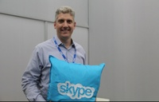
Seguimos en el Mobile World Congress 2012 de Barcelona, donde nuestros amiguetes de Xataka, Xataka Móvil y Xataka Android también están transmitiendo todas las novedades importantes que nos está dando el evento. En Genbeta ya hemos hablado con Paul Mockapetris, inventor de la tecnología DNS y uno de los padres de internet tal y como lo conocemos en la actualidad.
Ahora toca un reencuentro: Rick Osterloh, director de producto y marketing de Skype, se reúne con nosotros un año después para hablar de todo lo acontecido con Skype durante todo ese tiempo. Y no es poco: un mes después de hablar con él en el Mobile World Congress de 2011 se confirmó la compra de Skype por parte de Microsoft y el rumbo de la compañía cambió en torno al gigante de Redmond.
Veamos cómo ha influido este hecho en Skype hablando de nuevo con uno de sus directivos. Tenéis todas las respuestas de Rick Osterloh después del salto.
Skype sigue teniendo mucha competencia a su alrededor, pero no parece que le haya afectado mucho. Ha afectado de alguna forma la enorme expansión de iOS y Android?
No ha cambiado nada, seguimos sin centrarnos en la competencia. A medida que el mercado móvil cambia hay mucho sitio para la innovación en ese campo, y el mercado es demasiado amplio y lleno de oportunidades ahora mismo como para que la competencia presente problemas.
Envío de ficheros en Android, compatibilidad e integración con Facebook… ¿Cuál ha sido la reacción de los usuarios a estas novedades?
Han sido variadas. Los usuarios quieren mantener Facebook en un entorno cerrado, con amigos cercanos y familiares, pero gracias a eso conseguimos que los amigos cercanos de Facebook puedan efectuar llamadas VoIP usando el protocolo de Skype.
Habéis lanzado App Directory, una App Store propia para Skype. Cuál es la sensación después de un tiempo con esta tienda?
Aún es pronto, pero hay una interesante demanda para este tipo de aplicaciones con Skype. Las hay muy curiosas, y tenemos mucha curiosidad por ver qué es lo que nos traen los desarrolladores.
Skype adquirió GroupMe, un servicio de mensajería para individuales y grupos, veremos algún tipo de fusión de esos servicios o permanecerán independientes?
Bueno, son dos productos diferentes y cada uno está dando un rol particular. Pero el haber adquirido GroupMe nos da más cosas que hacer para nuestros usuarios, y con el tiempo vamos a tener cada vez más integración entre los dos servicios.
Vuestro lanzamiento más sonado para este Mobile World Congress es una versión beta del cliente Skype para Windows Mobile. ¿Qué expectativas tenéis con el sistema operativo de Microsoft?
Las expectativas son muy altas. Skype es la aplicación gratuita más descargada en la App Store para el iPad y la segunda más popular entre las aplicaciones para el iPhone. Esperamos lo mismo para los terminales con Windows Mobile, y por el momento a los usuarios les está gustando.
¿Cuál ha sido el beneficio de Skype por ahora tras la compra de Microsoft?
Somos parte de Microsoft desde el pasado mes de octubre. Han pasado sólo unos pocos meses, pero la experiencia ha sido muy pero que muy positiva. Tenemos muchas más ofertas y muchos canales más de distribución gracias a a eso. Cada vez crecemos más y estamos contratando a más personal para escalar bien. Y además, Windows 8 y su interfaz metro trabajan a la perfección.
Vídeo | YouTube
En Genbeta | Skype ha comprado GroupMe, Microsoft compra Skype por 8500 millones de dólares, Skype estrena su propia App Store
Tue, 28 Feb 2012 20:45:00 GMT
Los tweets promocionados llegarán a las aplicaciones móviles
Los tweets promocionados llegarán a las aplicaciones móviles
Dado que cada vez más usuarios utilizan Twitter desde sus teléfonos móviles, tarde o temprano se tenía que producir el anuncio de que los productos patrocinados llegarían a las aplicaciones móviles. Y así ha sido. Tanto las aplicaciones Twitter para iPhone y Twitter para Android, como la versión móvil de Twitter ya incorporan la publicidad de Twitter. Si utilizamos las aplicaciones oficiales tendremos lo mismo que podemos disfrutar en la versión web, pero en nuestros dispositivos móviles. Además de los tweets promocionados en las búsquedas, los trending topics o las cuentas promocionadas, tendremos tweets promocionados en nuestro timeline mezclados con los de las personas a las que seguimos. Podrás decidir si un tweet promocionado te ha resultado interesante o no, y si no es así podrás retirarlo e tu timeline. Y, como siempre, las cuentas promocionadas aparecerán en la sección a quién seguir. La dirección de Twitter en este sentido está clara, ahora sólo falta esperar cómo evoluciona para ver si en un futuro tendremos nuestro timeline abarrotado de tweets que no queríamos. Vía | Blog de Twitter En Genbeta Social Media | Twitter introducirá tweets y cuentas patrocinadas en las aplicaciones de iPhone y Android
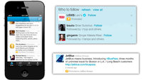
Dado que cada vez más usuarios utilizan Twitter desde sus teléfonos móviles, tarde o temprano se tenía que producir el anuncio de que los productos patrocinados llegarían a las aplicaciones móviles. Y así ha sido. Tanto las aplicaciones Twitter para iPhone y Twitter para Android, como la versión móvil de Twitter ya incorporan la publicidad de Twitter.
Si utilizamos las aplicaciones oficiales tendremos lo mismo que podemos disfrutar en la versión web, pero en nuestros dispositivos móviles. Además de los tweets promocionados en las búsquedas, los trending topics o las cuentas promocionadas, tendremos tweets promocionados en nuestro timeline mezclados con los de las personas a las que seguimos.
Podrás decidir si un tweet promocionado te ha resultado interesante o no, y si no es así podrás retirarlo e tu timeline. Y, como siempre, las cuentas promocionadas aparecerán en la sección a quién seguir. La dirección de Twitter en este sentido está clara, ahora sólo falta esperar cómo evoluciona para ver si en un futuro tendremos nuestro timeline abarrotado de tweets que no queríamos.
Vía | Blog de Twitter
En Genbeta Social Media | Twitter introducirá tweets y cuentas patrocinadas en las aplicaciones de iPhone y Android
Tue, 28 Feb 2012 17:25:31 GMT
Android-x86 4.0 RC1 publicado
Android-x86 4.0 RC1 publicado
El proyecto Android-x86 ha publicado la primera versión candidata de Android-x86 4.0, que está basada en Android 4.0.3 Ice Cream Sandwich, habiendo añadido código específico para permitir el funcionamiento del sistema en plataformas x86, en especial tabletas y netbooks. En la RC1 vamos a encontrar el Kernel 3.0.8 con KMS (Kernel Mode Setting) activado. Muchos netbooks podrán funcionar con resolución nativa con esta versión. Los equipos con AMD Radeon y chipsets Intel podrán beneficiarse de aceleración por hardware de OpenGL. Características de Android-x86 4.0 RC1 Android-x86 4.0 RC1 ofrece soporte para pantallas táctiles, WiFi, audio, Bluetooth, sensor de movimiento y cámara. Se ha incorporado el motor Javascript v8, mucho más rápido que la versión precedente y capacidad de reproducción de streaming en Chrome a través de HTTP, así como soporte experimental para Renderscript. El sistema simula una tarjeta SDCard mediante almacenamiento interno y los dispositivos externos USB y SDCard se montan de manera automática al ser conectados en la ruta /mnt/USB. También ofrece soporte para imágenes ISO híbridas. Android-x86 4.0 RC1 dispone de un asistente de instalación en modo texto y soporta los sistemas de archivos ext2, ext3, ntfs y fat32. Os recuerdo que existen imágenes optimizadas para diversas plataformas (ASUS Eee PC, Lenovo, etc.), por si queréis probar el invento en vuestro netbook. Más información | Notas de versión Web | Descarga
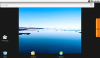
El proyecto Android-x86 ha publicado la primera versión candidata de Android-x86 4.0, que está basada en Android 4.0.3 Ice Cream Sandwich, habiendo añadido código específico para permitir el funcionamiento del sistema en plataformas x86, en especial tabletas y netbooks.
En la RC1 vamos a encontrar el Kernel 3.0.8 con KMS (Kernel Mode Setting) activado. Muchos netbooks podrán funcionar con resolución nativa con esta versión. Los equipos con AMD Radeon y chipsets Intel podrán beneficiarse de aceleración por hardware de OpenGL.
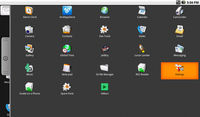
Características de Android-x86 4.0 RC1
Android-x86 4.0 RC1 ofrece soporte para pantallas táctiles, WiFi, audio, Bluetooth, sensor de movimiento y cámara. Se ha incorporado el motor Javascript v8, mucho más rápido que la versión precedente y capacidad de reproducción de streaming en Chrome a través de HTTP, así como soporte experimental para Renderscript.
El sistema simula una tarjeta SDCard mediante almacenamiento interno y los dispositivos externos USB y SDCard se montan de manera automática al ser conectados en la ruta /mnt/USB. También ofrece soporte para imágenes ISO híbridas.
Android-x86 4.0 RC1 dispone de un asistente de instalación en modo texto y soporta los sistemas de archivos ext2, ext3, ntfs y fat32. Os recuerdo que existen imágenes optimizadas para diversas plataformas (ASUS Eee PC, Lenovo, etc.), por si queréis probar el invento en vuestro netbook.
Más información | Notas de versión
Web | Descarga
Tue, 28 Feb 2012 13:46:07 GMT
11870 renueva su diseño para celebrar su quinto aniversario
11870 renueva su diseño para celebrar su quinto aniversario
Uno de los servicios más interesantes de recomendacioes es 11870 que ahora renueva su diseño. Para empezar mejorando las páginas de usuario con un diseño más limpio, tratando también de hacer más intuitiva la navegación por la agenda se sitio o seguir a nuestros contactos a través de un nuevo diseño de la cabecera. Además apuesta por dar más relevancia a las recomendaciones de los usuarios a través de las páginas explorar ciudades donde aparecerán sitios para descubrir o más de moda entre los usuarios de 11870 además de entrevistas, novedades, etc. En definitiva todo los que se cuece en la ciudad en la que queremos descubrir nuevos sitios. Las novedades se publicarán cada Jueves y los usuarios podrán suscribirse. De momento comienzan por Madrid. Lo cierto es que es una buena oportunidad para conocer sitios de una ciudad que vamos a visitar, pero también las nuevas páginas para explorar la ciudad son una buena forma de descubrir nuevo lugares, locales, etc. en nuestras propias ciudades. Seguro que para los pequeños negocios también representa una buena forma de promocionarse sobre todo tras la alianza de 11870 con QDQ. Esperemos que las páginas para explorar mantengan la esencia de 11870 que está en dar la voz al usuario a la hora de recomendar. A ver si no tardan mucho en dar el salto a más ciudades. Más Información | Blog 11870 En Genbeta | 11870 presenta sus renovadas aplicaciones para iPhone y Android
Uno de los servicios más interesantes de recomendacioes es 11870 que ahora renueva su diseño. Para empezar mejorando las páginas de usuario con un diseño más limpio, tratando también de hacer más intuitiva la navegación por la agenda se sitio o seguir a nuestros contactos a través de un nuevo diseño de la cabecera.
Además apuesta por dar más relevancia a las recomendaciones de los usuarios a través de las páginas explorar ciudades donde aparecerán sitios para descubrir o más de moda entre los usuarios de 11870 además de entrevistas, novedades, etc. En definitiva todo los que se cuece en la ciudad en la que queremos descubrir nuevos sitios. Las novedades se publicarán cada Jueves y los usuarios podrán suscribirse. De momento comienzan por Madrid.
Lo cierto es que es una buena oportunidad para conocer sitios de una ciudad que vamos a visitar, pero también las nuevas páginas para explorar la ciudad son una buena forma de descubrir nuevo lugares, locales, etc. en nuestras propias ciudades. Seguro que para los pequeños negocios también representa una buena forma de promocionarse sobre todo tras la alianza de 11870 con QDQ. Esperemos que las páginas para explorar mantengan la esencia de 11870 que está en dar la voz al usuario a la hora de recomendar. A ver si no tardan mucho en dar el salto a más ciudades.
Más Información | Blog 11870
En Genbeta | 11870 presenta sus renovadas aplicaciones para iPhone y Android
Tue, 28 Feb 2012 10:47:08 GMT
Apple no quiere Joyn en sus terminales
Apple no quiere Joyn en sus terminales
Cuando nuestro compañero Gallego nos habló por primera vez de Joyn, ya apuntó a que el éxito de la aplicación conocida como el WhatsApp de las operadoras, pasaba porque los fabricantes incluyeran la aplicación de serie en sus terminales. En el camino hacia el éxito de RCS-e (nombre técnico del servicio), se ha topado con un hueso muy duro de roer: los chicos de Cupertino. Apple se niega a instalar la aplicación en sus terminales (por defecto), y aún está por ver si va a permitir la comercialización de Joyn en su tienda de aplicaciones. Joyn, que ya cuenta con la simpatía de operadoras como Movistar, Orange o Vodafone y el interés de fabricantes como LG, HTC, LG Samsung y Sony Ericsson, también se enfrenta con el poco interés manifestado por algunas operadoras virtuales españolas. La mensajería móvil es una tarta enorme de la que todos quieren participar y la idea de Joyn es buena, por muy asentado que esté WhatsApp, pero si sus creadores no son capaces de convencer a Apple, van a ver limitada su expansión. Vía | La información En Genbeta | Arranca la beta de Joyn, el WhatsApp de las operadoras En Xataka On | Joyn, así se llamará el WhatsApp de las operadoras
Cuando nuestro compañero Gallego nos habló por primera vez de Joyn, ya apuntó a que el éxito de la aplicación conocida como el WhatsApp de las operadoras, pasaba porque los fabricantes incluyeran la aplicación de serie en sus terminales.
En el camino hacia el éxito de RCS-e (nombre técnico del servicio), se ha topado con un hueso muy duro de roer: los chicos de Cupertino. Apple se niega a instalar la aplicación en sus terminales (por defecto), y aún está por ver si va a permitir la comercialización de Joyn en su tienda de aplicaciones.
Joyn, que ya cuenta con la simpatía de operadoras como Movistar, Orange o Vodafone y el interés de fabricantes como LG, HTC, LG Samsung y Sony Ericsson, también se enfrenta con el poco interés manifestado por algunas operadoras virtuales españolas.
La mensajería móvil es una tarta enorme de la que todos quieren participar y la idea de Joyn es buena, por muy asentado que esté WhatsApp, pero si sus creadores no son capaces de convencer a Apple, van a ver limitada su expansión.
Vía | La información
En Genbeta | Arranca la beta de Joyn, el WhatsApp de las operadoras
En Xataka On | Joyn, así se llamará el WhatsApp de las operadoras